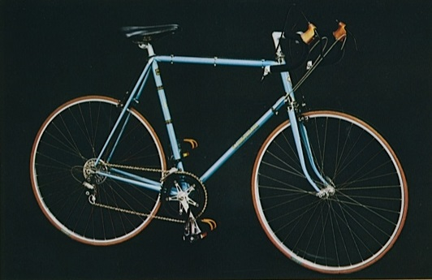

The High end Centurion aimed at the competitive cyclists it had Tange #1 Tubing with Suntour Cyclone Grouppo.. Very nicely finished model with alot of high end frame style details.
1978 Model:
1978 Catalog Specs.
| Frame Construction | Tange Champion No. 1 Double Butted Chromoly tubing. Forged tip |
|---|---|
| Fork | Tange Professional Chromoly Tubing Forged Ends |
| Lugs | Centurion Professional |
| Brake | Dia-Compe, Gran-Compe Black Side Pull |
| Chain | D.I.D. Chrome Plated |
| Crankset | Sugino Mighty Compe 42-52 Black |
| Derailleurs | Suntour Cyclone , Font and Rear. Finger tip or PDL-M Down tube shifter |
| Freewheel | Suntour WInner Steel 13-24 |
| Handlebar | Sakae World Randonneur Alloy |
| Headset | Tange Falcon |
| Hubs | Sunshine Pro-Am Low Flange |
| Pedals | MKS UR-K-Black |
| Rims | Araya 27" x 1 1/4.Alloy Clinchers |
| Tires | IRC 27" x 1 1/4" GSW HI-Racer Tires |
| Seat | Elina Super-Pro |
| Seatpost | Sakae RY-PI |
| Spokes | Stainless Steel Spokes |
| Stem | Sakae Royal |
| Extras | Toe Clip and Toe Strap, Fully Reflectorized |
| Frame Sizes | 21 1/2, 22 1/2, 23 1/2, 24 1/2, 25 1/2 |
| Colors | Pearlized Orange, Blue, Silver |
| MSRP | |
| Weight | 24 lbs (23 1/2" Frame Size) |

1979 Catalog Specs.
| Frame Construction | Tange Champion No. 1 Double Butted Chromoly tubing. Forged tip |
|---|---|
| Fork | Tange Professional Chromoly Tubing Forged Ends |
| Lugs | Forged Concave Seat Stays, Brazed on Custom Seat Binder Tube, Chromed Forged Dropouts with Axle adjuster, Brazed on Waterbottle studs and Chrome Lugs. |
| Brake | Dia-Compe, Gran-Compe 500 Side Pull with Gran Compe levers and Gum hoods |
| Chain | Suntour Tran-Z Gold |
| Crankset | Sugino Super Mighty Victory 42-52 With Drilled Chain-Rings 170mm |
| Derailleurs | Suntour Cyclone , Front and Rear. Cyclone shifters |
| Freewheel | Suntour WInner Steel Tran-Z 13-24 Gold |
| Handlebar | Sakae World Custom with Cloth Tape |
| Headset | Tange Falcon |
| Hubs | Sunshine Pro-Am Small Flange QR |
| Pedals | MKS UR-K-with Toe-Clips and Straps |
| Rims | Araya 700c 19.6mm Alloy Clinchers |
| Tires | 700c 25mm Centurion 250gr Road Racing Extra 100psi skin |
| Seat | Kashimax Racing Saddle |
| Seatpost | SR CTP-5 Laprade Type Alloy Fluted with chromoly dual allen key binder bolt |
| Spokes | Stainless Steel Spokes |
| Stem | SR New Royal Extra Super Light |
| Extras | Alloy Spoke Protector, Chain Stay Protector, Fully Reflectorized, Color Coordinated, Pinstriped, Touch Up Paint |
| Frame Sizes | 21 1/2, 22 1/2, 23 1/2, 24 1/2, 25 1/2 |
| Colors | Pearlized Yellow, Cobalt Blue |
| MSRP | |
| Weight | 21 lbs (23 1/2" Frame Size) |

1982 SemiPro (source Craigslist)
1982 Specs (need catalog to confirm).
| Frame Construction | Tange Champion #2 Full Chrome under paint |
|---|---|
| Fork | Tange Professional Chromoly Tubing Forged Ends |
| Lugs | Suntour GS dropouts |
| Brake | Dia-Compe, Gran-Compe 500 Side Pull with Gran Compe levers and Gum hoods |
| Chain | Suntour Tran-Z Gold |
| Crankset | Sugino Super Mighty Victory 39-52 With Drilled Chain-Rings 170mm |
| Derailleurs | Suntour Cyclone , Front and Rear. Cyclone shifters |
| Freewheel | Suntour WInner Steel 13-24 |
| Handlebar | Kusuki Medallion with Cloth Tape |
| Headset | Tange Falcon |
| Hubs | Sunshine Pro-Am Small Flange QR |
| Pedals | MKS Sylvan Pedals |
| Rims | Araya 700c 19.6mm Alloy Clinchers |
| Tires | ? |
| Seat | ? |
| Seatpost | SR CTP-5 Laprade Type Alloy Fluted with chromoly dual allen key binder bolt |
| Spokes | Stainless Steel Spokes |
| Stem | Kusuki Medallion |
| Extras | Alloy Spoke Protector, Chain Stay Protector, Fully Reflectorized, Color Coordinated, Pinstriped, Touch Up Paint |
| Frame Sizes | 21 1/2, 22 1/2, 23 1/2, 24 1/2, 25 1/2 |
| Colors | ? |
| MSRP | ? |
| Weight | ? |
2019 Vintage-Centurion.com